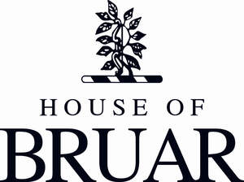

Trade Mark Journal No.2025/042 17 October 2025
UK00004273302 3 October 2025 (14,16,18,20,23,24,25,27,28,29,32,33,35,43)

- Class 14
- Jewellery; costume jewellery.
- Class 16
- Printed matter; photographs; stationery; packaging materials; printed publications.
- Class 18
- Animal skins; trunks and travelling bags; handbags; rucksacks; purses; umbrellas; clothing for animals.
- Class 20
- Articles made of wood, horn, bone or mother-of-pearl which are not included in other classes; garden furniture.
- Class 23
- Yarns and threads, for textile use.
- Class 24
- Textiles and textile goods; bed and table covers; travellers' rugs; textiles for making articles of clothing; duvets; covers for pillows, cushions and duvets.
- Class 25
- Clothing; footwear; headgear.
- Class 27
- Carpets; rugs; mats; matting.
- Class 28
- Games and playthings; playing cards; decorations for Christmas trees; children's toy bicycles.
- Class 29
- Meat; fish; poultry; game; preserved, dried and cooked fruits and vegetables; jellies, jams and compotes; edible oils and fats; prepared meals; soups; potato crisps.
- Class 32
- Beers; mineral and aerated waters; non-alcoholic drinks; fruit drinks and fruit juices; syrups for making beverages; shandy, de-alcoholised drinks, non-alcoholic beers and wines.
- Class 33
- Alcoholic wines; spirits; liqueurs.
- Class 35
- Retail services and online retail services in relation to jewellery, costume jewellery, printed matter, photographs, stationery, packaging materials, printed publications, animal skins, trunks and travelling bags, handbags, rucksacks, purses, umbrellas, clothing for animals, articles made of wood, horn, bone or mother-of-pearl, garden furniture, yarns and threads, for textile use, textiles and textile goods, bed and table covers, travellers' rugs, textiles for making articles of clothing, duvets, covers for pillows, cushions and duvets, clothing, footwear, headgear, carpets, rugs, mats, matting, games and playthings, playing cards, decorations for Christmas trees, children's toy bicycles, meat, fish, poultry, game, preserved, dried and cooked fruits and vegetables, jellies, jams and compotes, edible oils and fats, prepared meals, soups, potato crisps, beers, mineral and aerated waters, non-alcoholic drinks, fruit drinks and fruit juices, syrups for making beverages, shandy, de-alcoholised drinks, non-alcoholic beers and wines, alcoholic wines, spirits, liqueurs.
- Class 43
- Services for providing food and drink; restaurant, bar and catering services.
The House of Bruar Limited
Representative: Marks & Clerk LLP